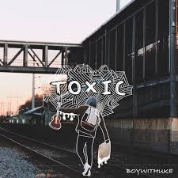
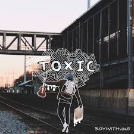

2020-2021
2020-2021: inicios en TikTok y primeros álbumes
Yang comenzó a subir contenido a TikTok en 2020 [3] después de que su hermano le presentara la plataforma. Su contenido no llamó mucho la atención en la plataforma hasta 2021, cuando varios de sus videos (incluida una serie de videos titulada "Minute-Long Songs") comenzaron a ganar popularidad. [4]
En septiembre de 2021, Yang lanzó su obra extendida Faded . Posteriormente, la canción Toxic se volvió viral en TikTok y apareció en más de sesenta y nueve mil videos en la plataforma. Fue transmitido alrededor de 500 millones de veces. [5] [6] El sencillo alcanzó el número 1 en las listas de Billboard Alternative Airplay después de estar en las listas durante treinta y una semanas consecutivas, lo que fue el sexto ascenso más largo al número 1 en la historia de Alternative Airplay. [5] "Toxic" obtuvo la certificación plata por la Industria Fonográfica Británica (BPI) y platino por la Recording Industry Association of America (RIAA). [7] [8]
En 2021, BoyWithUke lanzó su primer y segundo álbum de estudio, Melatonin Dreams y Fever Dreams respectivamente.
 


fever dreams toxic melatonin dreams